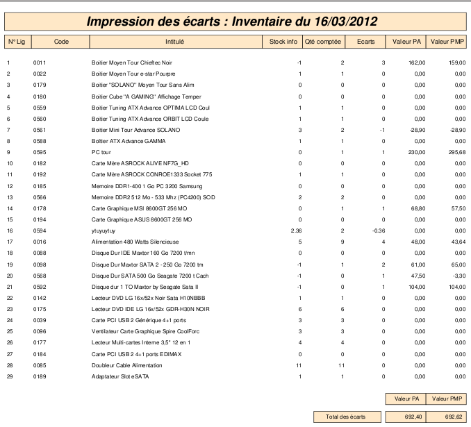

~ Comptabilité & facturation Laurux ~

~ Comptabilité & facturation Laurux ~ |
|
|
|
Généralités sur l'inventaire de fin d'exercice.

Une seule opération pour imprimer les écarts. Cliquez sur le bouton "Imprimer".

Vous aurez une impression semblable à cette copie d'écran.
----------------------------------------------------------------------------------------------------------------------